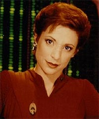
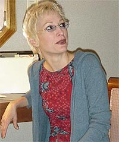
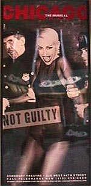

|
por Mariana
Pedroso
 No
final de semana passado tive a oportunidade de participar de um
bate-papo de internet com Nana Visitor (Kira Nerys), promovido
pelos fs da atriz, somente para os fs. No sempre que h
uma oportunidade como essa, e embora eu estivesse nervosa demais
para fazer qualquer pergunta, meu amigo e co-editor do Basenews,
as fez. Esse chat, em conjunto com o lanamento de uma pgina em
portugus dedicada atriz e sua personagem em Deep Space
Nine, acabou gerando esse pequeno texto sobre a vida dessa
fabulosa atriz para ser publicado aqui no Trek Brasilis.
Nana nasceu em 26 de julho de 1957, sendo criada no distrito dos
teatros em Nova York. Filha do coregrafo da Broadway, Robert
Tucker, e da professora de bal, Nenette Charisse, o destino dela
s poderia estar na arte. Ela comeou fazendo pequenas participaes
em musicais como "The Gentle People", "Gypsy",
"My One And Only" e "42nd Street", atuando ao
lado de grandes nomes como Angela Lansbury e Twiggy.
 Somente
em 1982 que Nana entrou para a televiso, e a partir de ento
participou de dezenas de seriados como convidada. "MacGyver",
"Murder She Wrote", "Matlock", "Remington
Steele" e "Working Girl" foram alguns deles.
Mas foi em 1992 que Nana comeou a ficar conhecida do grande pblico,
em especial dos trekkers, ao conseguir o papel da major Kira Nerys
em Deep Space Nine. O papel da primeira oficial da estao,
e oficial de ligao fora previamente designado para Michelle
Forbes, que fazia Ro Laren na Nova Gerao. Como Forbes no
aceitou o papel, os produtores acabaram criando Kira, para a
felicidade de muitos fs. Kira considerada uma das personagens
do universo trekker que melhor foi desenvolvida, e a sempre
perfeita atuao de Nana (e sua constante preocupao com a
personagem) no poderiam ter contribudo mais para o sucesso da
Bajoriana.
Atualmente,
Nana est no musical "Chicago", na Broadway, onde a
estrela do show, atuando como Roxie Hart. Ela tambm acabou de
filmar sua ltima participao no seriado "Dark Angel",
onde estava fazendo o personagem Madame X (ou dra. Elizabeth
Renfro), como atriz convidada.
Nana participou dos ltimos cinco episdios da primeira
temporada, mas por diversos motivos no pode renovar seu contrato
para a segunda temporada, onde participa apenas do primeiro episdio.
O que uma pena, pois, muito diferente de Kira, Renfro era uma
mulher m e poderosa, capaz de qualquer coisa para alcanar seus
objetivos, lembrando um pouco os trejeitos da j nossa conhecida
Intendente (a Kira do universo do Espelho, que apareceu no episdio
"Crossover", da segunda temporada de Deep
Space Nine, alm de mais quatro episdios ainda inditos no
Brasil).
Os fs da atriz que a conhecem pessoalmente no medem os
rasgados elogios ela, mostrando que Nana muito atenciosa,
simptica e de forma alguma arrogante ou metida, como comum
encontrar tais qualidades em diversos atores. Seus fs mais
ardorosos at criaram uma nova expresso para designar seus
estados quando a encontram pessoalmente, tamanha a emoo e
alegria. Da palavra paralized (paralisado) surgiu Nanatized! O
chat que participei no dia 11 de agosto mostra bem isso, quando
Nana cedeu seu tempo entre duas apresentaes de Chicago para
conversar com seus fs. O que mais chama a ateno foi o
interesse da atriz pelo Brasil. Uma das horas mais engraadas foi
quando ela perguntou se eu e Fernando estvamos perto do Rio.
Como grande f da cidade, entendo o fascnio que ela provoca,
especialmente em quem nunca esteve por l. Como seria bom se
fosse possvel traz-la para c. Como ela mesma disse, o
interesse j existe e o contato no seria difcil. Quem sabe no
convencemos o canal USA?
Brincadeiras a parte, abaixo est um trecho do batepapo com as
perguntas feitas pelo Fernando e por outros fs, com as respostas
da Nana. Observao: os textos entre colchetes foram colocados
para explicar algo e no fazem parte da pergunta ou resposta a
que se referem.
NANA
VISITOR: Ol a todos!
BASE NEWS: Ol, Nana!
BASE NEWS: Voc tem algum arrependimento aps sua experincia
em DS9?
NANA VISITOR: A nica coisa ruim na srie eram os horrios.
Houve noites em que as trs da manh eu dormi ao volante. Isso
muito assustador. Ns perdemos um membro da equipe tcnica
assim.
BASE NEWS: Voc participaria de um
filme de DS9? No acredito que seja possvel, mas nunca
se sabe...
NANA VISITOR: Sim, eu participaria, mas tambm no
acredito que o filme um dia seja produzido. Mas eu estaria
comandando a estao, no? Eu no poderia resistir [
oferta]!
BASE NEWS: Voc leu os livros "Avatar"?
Eles mostram a Kira comandando a estao...
NANA VISITOR: No, estou ouvindo falar sobre eles apenas
agora, e estou ficando chateada. [A garota que estava digitando
para Nana e organizando o chat explicou-a sobre os acontecimentos
de "Avatar".]
BASE NEWS: Por qu?
NANA VISITOR: Parece que eu perco poder e a
espiritualidade. [Nana e sua preocupao com o destino da
personagem, mesmo sendo em livro...]
BASE NEWS: Voc j pensou em
escrever um livro de DS9, assim como fizeram Andy Robinson
[Garak, que escreveu "A Stitch in Time"], e Armin
Shimmerman [Quark, que escreveu "The 34th Rule"]?
NANA VISITOR: Eu escreverei um dia, mas no acho que ser
uma novela de DS9.
BASE NEWS: Sobre o que voc
escreveria?
NANA VISITOR: Eu provavelmente escreveria sobre minha vida
de um modo que pudesse iluminar as coisas para outras mulheres.
BASE NEWS: E a maquiagem? Provocava
coceiras? A maquiagem de Kira, claro.
NANA VISITOR: Sim, coava e era quente, mas no nada
perto de ser um Ferengi. Eles tentaram me transformar em um por
cerca de 10 minutos --assim que eles colocaram a cabea eu entrei
em pnico!
BASE NEWS: Acredito que a maquiagem
Cardassiana que voc usou no episdio "Second Skin"
foi a pior de todas...
NANA VISITOR: Eu tive um terrvel ataque de pnico dentro
daquela maquiagem! Eu comecei a arranc-la aps 20 horas de
filmagens, e disse ao diretor "Por hoje s". Ele
disse, "No, no acabamos ainda", e eu disse,
"Sim, s", e comecei a arrancar pedaos do pescoo.
E ns paramos.
BASE NEWS: Eu mesmo sou claustrofbico,
ento sei como voc se sentiu... Voc mantm contato com os
outros membros do elenco de DS9?
NANA VISITOR: Bem, ocasionalmente eu converso com Sid [Alexander
Siddig, o Dr. Bashir, com quem casada!], e eu verei Ren [Auberjonois,
Odo] em Las Vegas.
BASE NEWS: Voc ir trabalhar com
Ren em Las Vegas?
NANA VISITOR: Irei sim, estaremos apresentando o "Love
Letters".
BASE NEWS: E como est Sid? Eu o
assisti em "Limite Vertical". Ele estar fazendo um
novo filme em breve?
NANA VISITOR: Acho que ele est bem, acho que est feliz.
E acho que ele comear em breve a dirigir filmes.
BASE NEWS: Isso seria timo. E
quanto a "Dark Angel"? Est gostando de participar de
uma nova srie de fico?
NANA VISITOR: Eu acho que a primeira temporada foi muito
agitada e interessante. Eu gostei muito de participar. Tive muita
liberdade.
BASE NEWS: verdade que a Madame X
ir morrer na srie?
NANA VISITOR: Oh sim, eu no sou apenas baleada, mas tambm
queimada, e eles encontram minha ID em uma pilha de cinzas. Foi o
que eu ouvi.
BASE NEWS: Mas ningum nunca morre
realmente em uma srie de fico...
NANA VISITOR: Talvez meu DNA esteja escondido em uma
garrafa em algum lugar...
BASE NEWS: Algum projeto novo para o
futuro prximo?
NANA VISITOR: Vocs podero me ver no primeiro episdio
da nova temporada de "Dark Angel". Mas depois disso eu no
sei. Ah, a vida de atores...
BASE NEWS: E quanto a filmes? Est
interessada em fazer filmes? Se sim, qual tipo de filme?
NANA VISITOR: Teria que ser um papel que fizesse a diferena
para mim, no me importo se fosse pequeno, mas teria de ser algo
que realmente me atrasse, e eu no tiraria a roupa. Nunca vi
arte nisso.
BASE NEWS: Qual a pior pergunta que j
fizeram a voc em uma entrevista, chat ou conveno?
NANA VISITOR: Esse o tipo de coisa que voc esquece
assim que pode!
BASE NEWS: Voc viria a uma conveno
no Brasil se recebesse um convite?
NANA VISITOR: Sim, duplamente sim!
BASE NEWS: Alguma mensagem para seus
fs no Brasil?
NANA VISITOR: Sim, eu tenho um interesse verdadeiro de
visit-los a. Eu estive conversando sobre o Brasil nos ltimos
meses, e usualmente este o preldio de se ir a algum lugar.
BASE NEWS: Espero que voc venha
logo! Mantenha-nos informados!
 NANA
VISITOR: Em que lugar do Brasil voc est?
BASE NEWS: Mariana e eu somos da
mesma cidade: Campinas, SP.
NANA VISITOR: Vocs esto perto do Rio de Janeiro?
BASE NEWS: Voando, apenas uma hora de
distncia. De carro, umas seis horas... Campinas fica mais perto
de So Paulo.
BASE NEWS: Voc fala alguma outra lngua,
alm do ingls?
NANA VISITOR: No, mas eu gostaria. Mas espero que Django
(seu filho mais novo) se torne bilnge...
BASE NEWS: No ensine portugus a
ele -- uma lngua difcil de se aprender...
NANA VISITOR: Eu acredito, mas uma lngua to bonita!
BASE NEWS: Nana, para registro, eu
fui o responsvel por fazer Mariana assistir DS9 --e agora
ela gosta de assistir a srie s por sua causa...
NANA VISITOR: Eu adorei isso!
BASE NEWS: Uma ltima mensagem para
voc: sou um grande f seu, foi uma grande emoo estar
aqui. Voc muito simptica por estar aqui conosco! Talvez,
algum dia, possamos nos encontrar. Eu te desejo apenas o melhor!
NANA VISITOR: Eu adoraria conhecer voc! E seria timo se
acontecesse no Brasil!
BASE NEWS: Seria timo! Tchau, ou,
como dizemos em portugus, Te adoro, tudo de bom, e adeus!
NANA VISITOR: Boa noite a todos!
|